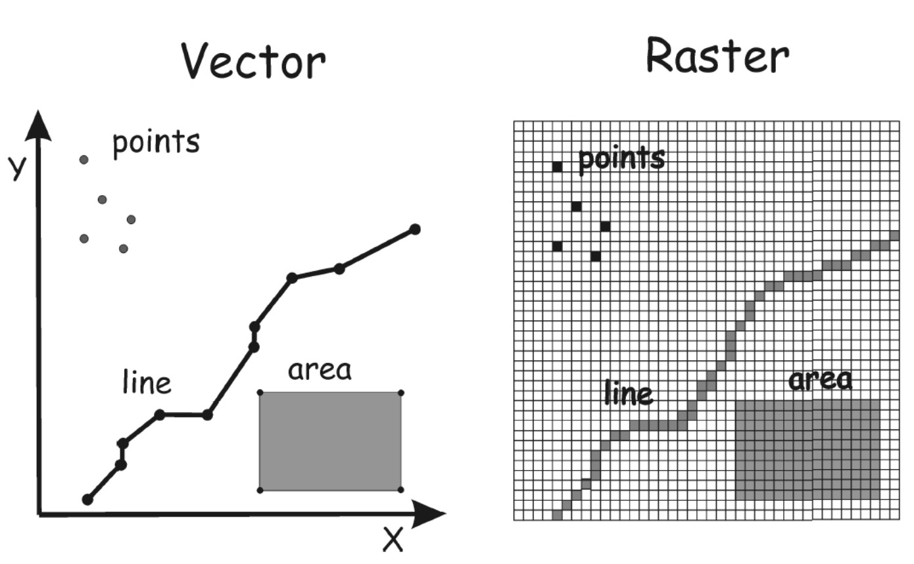
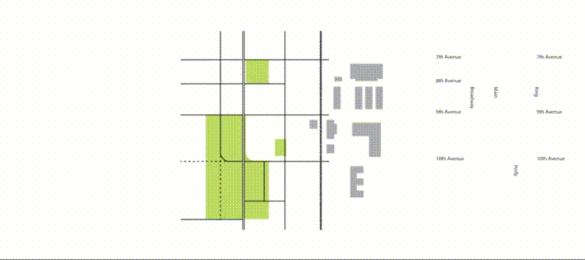
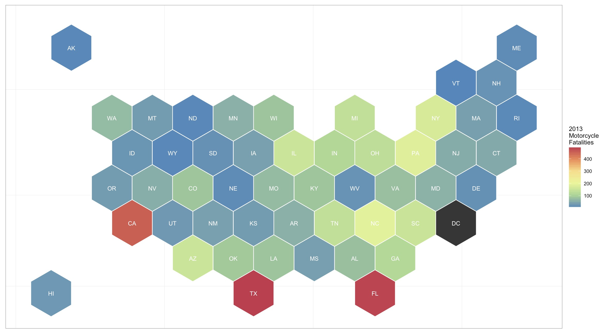
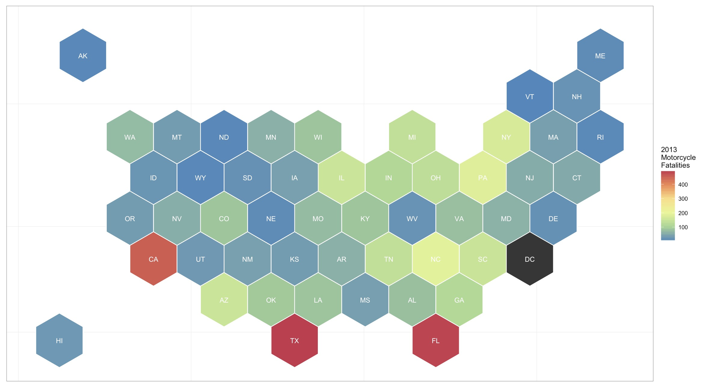

Visual Analytics by using Web GIS Tools in Transportation Decision Making
Subasish Das
Associate Transportation Researcher
Texas A&M Transportation Institute (TTI)
January 9, 2017
Outline
- What is GIS?
- Tools
- Graphical User Interface (GUI) Centric
- Command Line Interface (CLI) Centric
- WebGIS and Transportation
- What's next?
What is GIS?
- It's basically a computer aided cartographic tool.
- It helps to wrangle, analyze, and display all forms of geographically referenced information.
How does it work?
- Aims to represent the complex geospatial reality
- Utilizes 'layer' approach
- Two types of data:
- Raster
- Vector
-

Data Layers
Source: Lynda.com
Tools of the Trade
- Graphical User Interface (GUI) Centric
- ArcGIS [Desktop]
- QGIS [Desktop]
- Grass GIS [Desktop]
- Mapbox Studio Classic [Desktop]
- Command Line Interface (CLI) Centric
- ArcGIS [ArcPy, r-bridge]
- CartoDB
- Mapbox Studio
- R [ggmap, choroplethr, leafletr, rMaps]
- javascript [Mapbox.js, CartoDB.js, leaflet.js]
John Snow's Map
WebGIS in Transportation
- GIS is a widely used tool in transportation engineering
- WebGIS makes visualization more dynamic and real-time
- Transforming data from a macro level to micro level
- WebGIS in Transportation is becoming popular.
Motorcycle Fatalities in the U.S. [2013]


Inclement Weather Crashes in Florida
Fatal Crashes in the U.S. (2014)
Fatal Crashes in the U.S. (2014)
Fatal Crashes in the U.S. (2014)
January 2016 Blizzard


What's next?
- We are now in the world of internet of things.
- GIS is changing everyday and so is transportation world.
- CLI centric tools are become more popular due to their crispy look and html previleges.
- Proprietary commercial software ArcGIS is adopting newer tools to continue business in the market.
- GIS needs to keep pace with NEOGEOGRAPHY (use of geographical techniques and tools for personal and community activities or by a non-expert group of users).